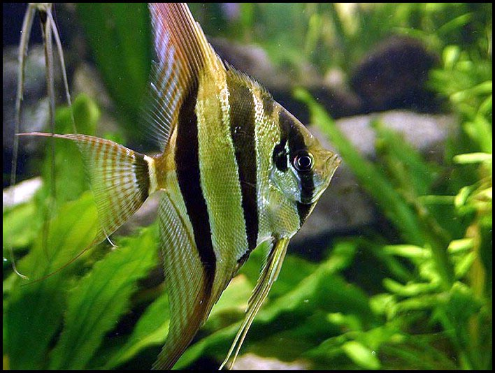

Vitorláshal

Előfordulás
Megjelenése
Rendszertan
Változatai
Az Amazonasnak és mellékfolyójának, a Rio Negrónak lakója ez az érdekes testformájú, annyiak által megcsodált és kedvelt díszsügér. Nevét vonzó külsejének és méltóságteljes úszásmódjának köszönheti. A vadon élő változat zöldesbarna színű, testén sötét, hosszanti keresztcsíkokkal. Bár rengeteg színváltozata létezik, a természetes forma a legkedveltebb. Eredeti élőhelyén is dús növények között vadászik, ezért fogságban is tartsuk sűrű növények között.
